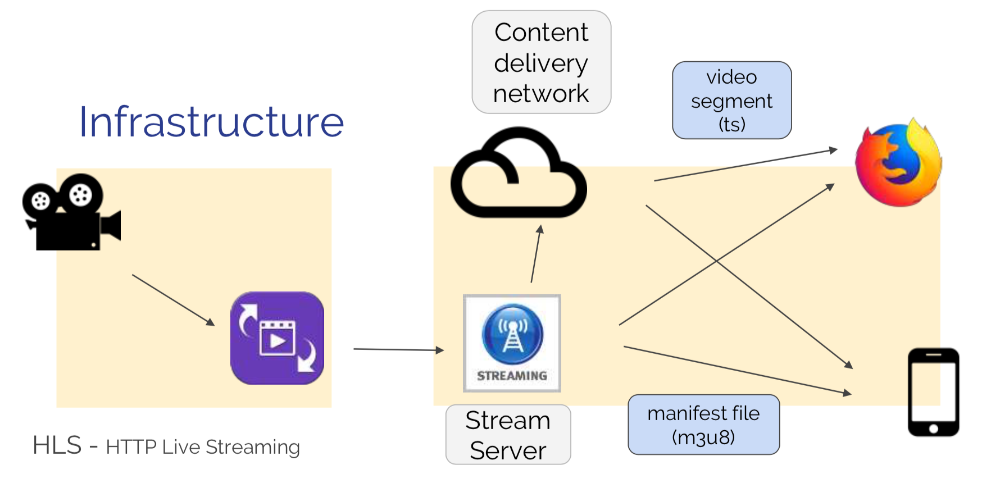
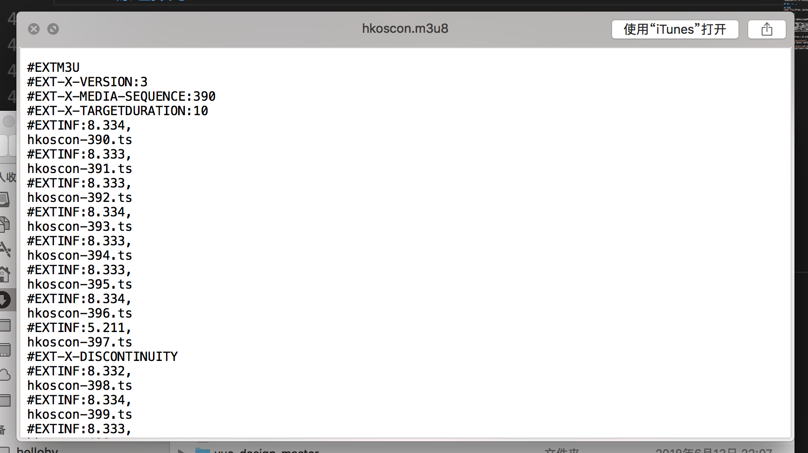
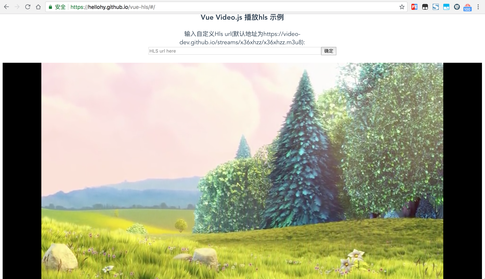

h5直播技术探索
文章目录
本文主要是对目前WEB端主流的直播技术进行一些探索后整理的资料
视频流协议
主流的分为两种，HLS和RTMP，移动端WEB更多的采用HLS，由于其跨平台效果好，但是延迟性较高，pc端WEB更多的采用RTMP，实时性比较好
HLS（HTTP Living Streaming)
HTTP Live Streaming（简称 HLS）是一个基于 HTTP 的视频流协议，由 Apple 公司实现，Mac OS 上的 QuickTime、Safari 以及 iOS 上的 Safari 都能很好的支持 HLS，高版本 Android 也增加了对 HLS 的支持。一些常见的客户端如：MPlayerX、VLC 也都支持 HLS 协议。
最大的特点是兼容性比较好，但是发现caniuse上看can i use HLS，只有Edge和Safari提供原生支持，那实际上兼容性比较好指的是可以让用户在不使用flash情况下也能用。
可以引入videojs-contrib-hls来使其他浏览器获得支持，注意需要直播流服务端同时开启CORS，文档上有说明：
Unlike a native HLS implementation, the HLS tech has to comply with the browser’s security policies. That means that all the files that make up the stream must be served from the same domain as the page hosting the video player or from a server that has appropriate CORS headers configured. Easy instructions are available for popular webservers and most CDNs should have no trouble turning CORS on for your account.
RTMP (Real Time Messaging Protocol)
Real Time Messaging Protocol（简称 RTMP）是 Macromedia 开发的一套视频直播协议，现在属于 Adobe。这套方案需要搭建专门的 RTMP 流媒体服务如 Adobe Media Server，并且在浏览器中只能使用 Flash 实现播放器。它的实时性非常好，延迟很小，但无法支持移动端 WEB 播放是它的硬伤。
虽然无法在iOS的H5页面播放，但是对于iOS原生应用是可以自己写解码去解析的, RTMP 延迟低、实时性较好。
浏览器端，HTML5 video标签无法播放 RTMP 协议的视频，可以通过 video.js 来实现。
优缺点比对:
| - | 优点 | 缺点 | 特点 | 原理 | 使用场景 |
|---|---|---|---|---|---|
| HLS | 跨平台 | 延迟高(10~20s) | 短连接HTTP | 集合一段时间数据生成ts切片文件更新m3u8文件 | 移动端、pc端 |
| RTMP | 实时性好，延迟低（1~3s） | 1.高并发下不稳定 2.IOS平台要开发支持相关协议的播放器 3.使用非标准TCP端口（不使用80，443） |
长连接TCP | 每个时刻的数据收到后立即发送 | pc端，互动性强，实时性要求高 |
HLS原理探究
工作流程图： 
提供HLS的服务器一般做以下这两种事情：
- 编码：以 H.263 格式对图像进行编码，以 MP3 或者 HE-AAC 对声音进行编码，最终打包到 MPEG-2 TS（Transport Stream）容器之中；
- 分割：把编码好的 TS 文件等长切分成后缀为 ts 的小文件，并生成一个 .m3u8 的纯文本索引文件；
客户端采用的是m3u8文件，和音频文件m3u很像，简单来说是m3u8是包含了多个ts文件的播放列表，m3u8 必须动态更新，ts 可以走 CDN。可以看一个m3u8文件的样子：

其中：
- #EXTM3U m3u文件头，必须放在第一行。
- #EXT-X-TARGETDURATION 每个分片TS的最大的时长。
- #EXT-X-VERSION 用以标示协议版本。
- #EXT-X-MEDIA-SEQUENCE TS分片的序列号。
- #EXT-X-PLAYLIST-TYPE 提供关于PlayList的可变性的信息， 这个对整个PlayList文件有效，是可选的。
- #EXTINF extra info，分片TS的信息，如时长，带宽等。
同时可以看到 HLS 协议本质还是一个个的 HTTP 请求 / 响应，所以适应性很好，不会受到防火墙影响。但它也有一个致命的弱点：延迟现象非常明显。如果每个 ts 按照 5 秒来切分，一个 m3u8 放 6 个 ts 索引，那么至少就会带来 30 秒的延迟。如果减少每个 ts 的长度，减少 m3u8 中的索引数，延时确实会减少，但会带来更频繁的缓冲，对服务端的请求压力也会成倍增加。所以只能根据实际情况找到一个折中的点。
DEMO
项目使用vue-cli搭建，主要采用vue-video-player以及viedo.js的插件videojs-contrib-hls来实现直播流的播放：
效果如下:

总结
如果采用HLS技术直播，客户端可能需要重点关注一下这些问题：
- H5 HLS 播放卡顿问题，server 端可以做好分片策略，将 ts 文件放在 CDN 上，前端可尽量做到 DNS 缓存等。
- 要达到更好的实时互动，可以采用RTMP
- 各平台播放器表现不统一，尤其是安卓下，很多浏览器把video标签替换成了原生自带播放器样式跟行为，很难控制其行为跟样式。
参考文章
文章作者 Hellohy
上次更新 2018-08-05